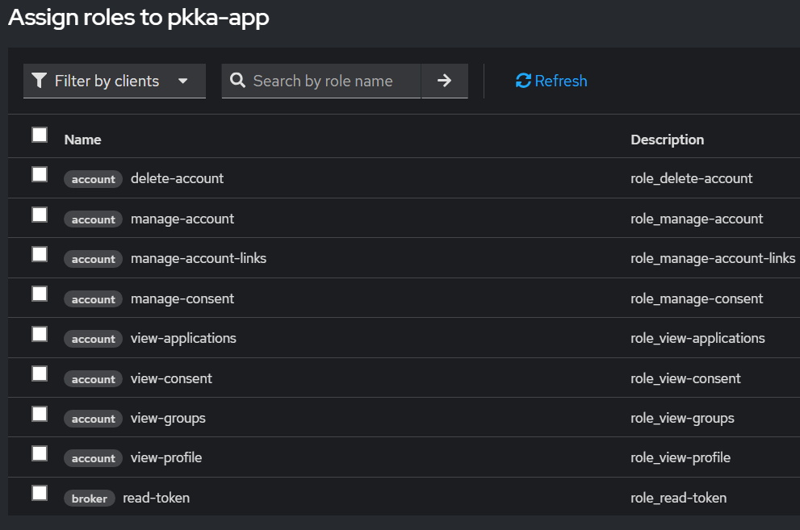

PKKA — Dokumentacja Techniczna
Keycloak 26 + Discord OIDC + Guild Verification + Spring Boot 4
Architektura systemu
Decyzje architektoniczne
System oparty jest na rozdzieleniu odpowiedzialności między dwa komponenty:
| Komponent | Odpowiedzialność |
|---|---|
| Keycloak | Wyłącznie tożsamość — autentykacja, zarządzanie kontami, federacja przez Discord OIDC, przechowywanie tokenów brokera |
| Spring Boot | Logika biznesowa — weryfikacja przynależności do serwera Discord, nadawanie ról przez Keycloak Admin API |
Zrezygnowano z customowych wtyczek Keycloaka (np. keycloak-discord) na rzecz natywnego OIDC:
| Problem z wtyczkami | Rozwiązanie w tej architekturze |
|---|---|
Oparte na OAuth2, nie OIDC — brak weryfikacji pola aud w ID tokenie podczas broker handshake (ryzyko Confused Deputy Attack) | Keycloak weryfikuje aud ID tokenu podczas wymiany authorization code — blokuje podstawienie kodu wygenerowanego dla innego client_id |
Ręczne mapowanie profilu i ról w .jar | Keycloak obsługuje to przez standardowe mappery |
Konieczność utrzymania wersji .jar zgodnej z Keycloakiem | Brak zewnętrznych zależności, zero maintenance |
/users/@me/guilds nie weryfikuje client_id, bearer token wystarczy. Korzyść OIDC jest wyłącznie w warstwie brokera:
| Etap | Token | Weryfikacja aud | Korzyść OIDC nad OAuth2 |
|---|---|---|---|
| Broker handshake (Keycloak ↔ Discord) | ID token (JWT) | ✅ Keycloak weryfikuje | Tak — blokuje Confused Deputy |
| Runtime API calls (Spring ↔ Discord API) | Access token (opaque) | ❌ Discord nie weryfikuje | Nie — identyczne jak OAuth2 |
Przepływ — Guild Verification
Infrastruktura — Docker
# docker-compose.yml
services:
postgres:
image: postgres:16
container_name: iam-postgres
ports:
- "5432:5432"
environment:
POSTGRES_DB: keycloak
POSTGRES_USER: keycloak
POSTGRES_PASSWORD: password
volumes:
- postgres_data:/var/lib/postgresql/data
networks:
- iam-network
healthcheck:
test: ["CMD-SHELL", "pg_isready -U keycloak -d keycloak"]
interval: 10s
timeout: 5s
retries: 5
keycloak:
image: quay.io/keycloak/keycloak:26.0.8
container_name: iam-keycloak
command: start-dev # Tryb deweloperski, do zmiany na "start" w produkcji
environment:
KC_DB: postgres
KC_DB_URL: jdbc:postgresql://postgres:5432/keycloak
KC_DB_USERNAME: keycloak
KC_DB_PASSWORD: password
KC_BOOTSTRAP_ADMIN_USERNAME: admin
KC_BOOTSTRAP_ADMIN_PASSWORD: admin
KC_HOSTNAME: localhost
KC_HTTP_ENABLED: "true"
ports:
- "8081:8081"
depends_on:
postgres:
condition: service_healthy
networks:
- iam-network
mailpit:
image: axllent/mailpit:latest
container_name: iam-mailpit
ports:
- "8025:8025" # UI web
- "1025:1025" # SMTP
networks:
- iam-network
volumes:
postgres_data:
networks:
iam-network:
driver: bridgeKC_BOOTSTRAP_ADMIN_* działa tylko przy pierwszym starcie (tworzeniu bazy). Przy kolejnych uruchomieniach Keycloak używa konta zapisanego w PostgreSQL.http://localhost:8025. Nie wysyła nic na zewnątrz.Discord Developer Portal
Wejdź na https://discord.com/developers/applications i wybierz swoją aplikację.
Sidebar → OAuth2 → sekcja Redirects → Add Redirect:
http://localhost:8081/realms/pkka/broker/discord/endpointKliknij Save Changes. Skopiuj Client ID i wygeneruj Client Secret.
Keycloak — Realm
master służy wyłącznie do administracji Keycloakiem. Nigdy nie twórz tam użytkowników ani klientów swojej aplikacji.Tworzenie Realmu
Lewy górny róg → kliknij nazwę aktualnego realmu → Create realm
Realm name: pkka — pole Resource file zostaw puste (służy do importu JSON z gotowej konfiguracji). Kliknij Create.
Zakładka Login
| Opcja | Wartość | Dlaczego |
|---|---|---|
| User registration | ON | Samodzielna rejestracja emailem |
| Forgot password | ON | Link "zapomniałem hasła" |
| Remember me | ON | Checkbox na stronie logowania |
| Verify email | ON | Wyłącz tymczasowo jeśli brak SMTP |
| Login with email | ON | Logowanie emailem zamiast usernamem |
| Duplicate emails | OFF | Jedno konto na jeden adres email |
| SSL Required | none | Tylko dev — na prod: external requests |
Zakładka Email (Mailpit)
| Pole | Wartość |
|---|---|
| From | noreply@pkka.local |
| From display name | PKKA |
| Host | mailpit |
| Port | 1025 |
Efekt — działające emaile i rejestracja


http://localhost:8025) — przechwycony email weryfikacyjny od PKKAKeycloak — Client
Sidebar → Clients → Create client
Ekran 1 — General Settings
| Pole | Wartość |
|---|---|
| Client type | OpenID Connect |
| Client ID | pkka-app |
| Name | PKKA Web Application |
Ekran 2 — Capability config

| Opcja | Wartość | Dlaczego |
|---|---|---|
| Client authentication | ON | Confidential client — używa client secret |
| Authorization | OFF | Nie potrzebujemy fine-grained authz |
| Standard flow | ✓ | Authorization Code Flow — poprawny dla aplikacji webowych |
| Direct access grants | ✗ | Wyłącz — włącz tylko tymczasowo do testów Postmanem |
| Service accounts enabled | ✓ | Wymagane do nadawania ról przez Admin API |
Ekran 3 — Login settings
| Pole | Wartość |
|---|---|
| Root URL | http://localhost:8080 |
| Valid redirect URIs | http://localhost:8080/* |
| Valid post logout redirect URIs | http://localhost:8080/* |
| Web origins | http://localhost:8080 |
Skopiuj Client Secret
Po zapisaniu → zakładka Credentials → skopiuj Client secret.
Service Account Roles
Zakładka Service account roles (pojawia się po zaznaczeniu Service accounts enabled) → Assign role → filtr: Filter by clients.

broker / read-tokenDodaj obie role:
| Klient | Rola | Po co |
|---|---|---|
broker | read-token | Pobieranie tokenów brokera (Discord AT) w imieniu użytkowników |
realm-management | view-users | Odczyt danych użytkowników do nadawania ról |
Keycloak — Identity Provider Discord
Sidebar → Identity providers → Add provider → OpenID Connect v1.0
Formularz podstawowy
| Pole | Wartość |
|---|---|
| Alias | discord |
| Display name | Discord |
| Enabled | ON |
| Hide on login page | OFF |
| Store tokens | ON |
| Stored tokens readable | ON |
| Discovery endpoint | https://discord.com/.well-known/openid-configuration → kliknij Import |
| Client ID | Discord Client ID |
| Client Secret | Discord Client Secret |
| Client authentication | client_secret_post |
| Default Scopes | openid email identify guilds |


broker.read-tokenidentify zwraca username i avatar Discorda. Scope guilds zwraca listę serwerów. Oba są wymagane dla weryfikacji alumni.Efekt — zgoda Discord po dodaniu scope guilds

guilds — brak "Know what servers you're in"
guilds — pojawia się "Know what servers you're in"Advanced settings (po kliknięciu Save — wróć do edycji IDP)
| Pole | Wartość | Dlaczego |
|---|---|---|
| Trust email | ON | Discord weryfikuje maile — nie pytamy użytkownika ponownie |
| Account linking policy | DEFAULT | Tworzy nowe konta LUB linkuje z istniejącym gdy email się zgadza |
LINK_ONLY — blokuje tworzenie nowych kont. Użytkownicy logujący się Discordem po raz pierwszy dostaną błąd.Mappery atrybutów (zakładka Mappers — pojawia się po Save)
Zakładka Mappers jest dostępna dopiero po pierwszym zapisaniu IDP.
Mapper 1 — Username
| Pole | Wartość |
|---|---|
| Name | discord-username |
| Sync mode | Inherit |
| Mapper type | Attribute Importer |
| Claim | preferred_username |
| User Attribute Name | username |
Mapper 2 — Avatar (opcjonalnie)
| Pole | Wartość |
|---|---|
| Name | discord-avatar |
| Mapper type | Attribute Importer |
| Claim | picture |
| User Attribute Name | picture |
preferred_username pochodzi z Userinfo Endpoint Discorda — Keycloak odpytuje go automatycznie po logowaniu. Weryfikacja: Users → [konto] → zakładka Details.Keycloak — First Broker Login Flow
Sidebar → Authentication → flow first broker login
| Krok | Ustawienie | Znaczenie |
|---|---|---|
| Review Profile | DISABLED | Pomijamy formularz uzupełniania danych — Keycloak pobiera je z mapperów Discorda |
| Handle Existing Account | ALTERNATIVE | Wykonuje się gdy email z Discorda już istnieje w bazie |
| Verify Existing Account by Email | ALTERNATIVE | Wysyła mail weryfikacyjny przy linkowaniu kont — zabezpieczenie przed przejęciem konta |
ALTERNATIVE = krok wykona się jeśli zajdzie potrzeba, nie blokuje flow gdy nie jest potrzebny.Keycloak — Role i uprawnienia
Utwórz rolę verified-alumn
Sidebar → Realm roles → Create role → Role name: verified-alumn → Save.
Rola broker.read-token dla użytkownika
Endpoint /broker/discord/token wymaga tokenu samego użytkownika z rolą broker.read-token. Rola ta jest nadawana automatycznie gdy Stored tokens readable = ON — użytkownik otrzymuje ją przy pierwszym logowaniu przez Discord.
Jeśli chcesz nadać ją ręcznie do testów:
Users → [konto] → Role mapping → Assign role → Filter by clients → broker / read-token → Assign
Weryfikacja konfiguracji Keycloaka
Otwórz w trybie incognito:
http://localhost:8081/realms/pkka/protocol/openid-connect/auth?client_id=pkka-app&response_type=code&scope=openid&redirect_uri=http://localhost:8080/login/oauth2/code/keycloak
http://localhost:8081/realms/pkka/account to Panel Zarządzania Kontem — przyciski zewnętrznych providerów się tam nie pojawiają. To normalne zachowanie.Efekt logowania przez Discord


Testowanie przez Postman
Poniższy przepływ pozwala zweryfikować działanie całej integracji bez uruchamiania Spring Boota. Postman pełni rolę aplikacji frontendowej — wykonuje Authorization Code Flow żeby zdobyć Keycloak Access Token użytkownika.
Krok 1 — Dodaj Redirect URI Postmana do Keycloaka
Clients → pkka-app → Valid redirect URIs — dodaj tymczasowo:
https://oauth.pstmn.io/v1/callbackKrok 2 — Zdobądź Keycloak Access Token przez OAuth2 flow
Utwórz nowy request GET /broker/discord/token. Zakładka Authorization → Type: OAuth 2.0 → kliknij Get New Access Token.
Wypełnij formularz:
| Pole | Wartość |
|---|---|
| Grant Type | Authorization Code |
| Auth URL | http://localhost:8081/realms/pkka/protocol/openid-connect/auth |
| Access Token URL | http://localhost:8081/realms/pkka/protocol/openid-connect/token |
| Client ID | pkka-app |
| Client Secret | twój secret |
| Scope | openid |
| Redirect URI | https://oauth.pstmn.io/v1/callback |
Kliknij Proceed — otworzy się webview z prawdziwą stroną logowania Keycloaka z przyciskiem Discord.

Discord pyta o zgodę. Upewnij się że widnieje "Know what servers you're in" — to potwierdza poprawność scope guilds.


Po zalogowaniu przez Discord Postman przechwyci kod i wymieni go na token. Kliknij Use Token.

Krok 3 — Pobierz Discord Access Token z Keycloaka
GET http://localhost:8081/realms/pkka/broker/discord/token
Authorization: Bearer <KEYCLOAK_ACCESS_TOKEN>
broker/read-token — Client not authorizedPo nadaniu roli broker/read-token na service account klienta pkka-app oraz roli użytkownikowi — odpowiedź 200 OK:


guilds email identify — potwierdzenie poprawnej konfiguracjiKrok 4 — Weryfikacja listy serwerów Discord
GET https://discord.com/api/users/@me/guilds
Authorization: Bearer <DISCORD_ACCESS_TOKEN>
id to wartość do sprawdzenia w logice autoryzacji.Dalsze kroki — Spring Boot
Pełna implementacja Spring Boot wymaga następujących komponentów. Szczegółowy kod zostanie opisany w osobnej sekcji dokumentacji po zakończeniu konfiguracji infrastruktury.
Wymagane zależności (build.gradle)
| Artefakt | Cel |
|---|---|
spring-boot-starter-webmvc | HTTP, REST kontrolery |
spring-boot-starter-security | Spring Security |
spring-boot-starter-oauth2-client | OIDC klient — rozmowy z Keycloakiem |
spring-boot-starter-thymeleaf | Templating HTML |
keycloak-admin-client:26.0.8 | Nadawanie ról przez Keycloak Admin API |
application.yml — kluczowe sekcje
server:
port: 8080
spring:
security:
oauth2:
client:
registration:
keycloak:
client-id: pkka-app
client-secret: <SECRET>
scope: openid,profile,email
authorization-grant-type: authorization_code
redirect-uri: "{baseUrl}/login/oauth2/code/{registrationId}"
provider:
keycloak:
issuer-uri: http://localhost:8081/realms/pkka
user-name-attribute: preferred_username
keycloak:
server-url: http://localhost:8081
realm: pkka
client-id: pkka-app
client-secret: <SECRET>
discord:
guild-id: <TWOJE_SERVER_ID>guilds nie jest potrzebny w konfiguracji Spring Boota — jest ustawiany po stronie Keycloak→Discord (Default Scopes w IDP). Spring Boot rozmawia tylko z Keycloakiem.Komponenty do implementacji
| Klasa | Odpowiedzialność |
|---|---|
SecurityConfig | Konfiguracja Spring Security, OAuth2 login flow, logout do Keycloaka |
KeycloakAdminConfig | Bean Keycloak Admin Client (client credentials) |
DiscordGuildService | Pobieranie Discord AT z Keycloaka, weryfikacja serwera, nadawanie roli |
GuildVerificationController | Endpoint POST /verify-guild |
ProfileController | Wyświetlanie danych zalogowanego użytkownika (debug) |
Typowe błędy
| Błąd | Przyczyna | Rozwiązanie |
|---|---|---|
redirect_uri mismatch na Discordzie | Zły URI w Discord Dev Portal | Sprawdź: http://localhost:8081/realms/pkka/broker/discord/endpoint |
| Brak przycisku Discord | Hide on login page = ON | Zmień na OFF w ustawieniach IDP |
| Błąd przy pierwszym logowaniu Discordem | Account linking policy = LINK_ONLY | Zmień na DEFAULT |
| Email weryfikacyjny nie dochodzi | Brak SMTP | Uruchom Mailpit lub wyłącz tymczasowo Verify email |
403 Client not authorized to retrieve tokens | Brak roli read-token na service account | Clients → pkka-app → Service account roles → dodaj broker/read-token |
403 z tokenem użytkownika na /broker/discord/token | Brak roli broker.read-token na koncie | Stored tokens readable = ON LUB ręczne nadanie roli w User → Role mapping |
| Auth failed w Postmanie z YubiKey | Webview Postmana nie obsługuje WebAuthn/FIDO2 | Użyj testowego konta bez 2FA |
| Discord: "verified email or phone" | Testowe konto Discord bez weryfikacji | Użyj konta z zweryfikowanym emailem |
Rola verified-alumn nie pojawia się w JWT | Stary token po nadaniu roli | Użytkownik musi uzyskać nowy token (ponowne logowanie) |
invalid_client w logach Spring | Zły Client Secret | Sprawdź application.yml vs zakładka Credentials w Keycloak |
Keycloak — Role i Grupy (na podstawie User Stories)
Na podstawie aktorów zdefiniowanych w miro_plan.md definiujemy cztery role i odpowiadające im grupy w realmie pkka. Grupy są wygodniejsze niż ręczne przypisywanie ról — użytkownik dodany do grupy dziedziczy jej role automatycznie.
Role realmowe (Realm Roles)
| Rola | Aktor z US | Uprawnienia |
|---|---|---|
user | Zalogowany użytkownik | Składanie wniosku o dołączenie, przeglądanie statusu, linkowanie konta Discord |
verified-alumn | Zweryfikowany alumn | Lista alumnów, materiały, wydarzenia, edycja profilu, koła zainteresowań |
admin | Administrator | Panel administracyjny, weryfikacja wniosków, tworzenie wydarzeń, ankiety, statystyki |
bot | Bot Discord | Service account — synchronizacja ról, powiadamianie o wydarzeniach |
user jest rolą bazową — każdy zarejestrowany użytkownik ją posiada. verified-alumn i admin są rolami addytywnymi — stackują się z user.Grupy (Groups)
Grupy upraszczają zarządzanie — zamiast przypisywać role każdemu użytkownikowi osobno, dodajesz go do grupy.
| Grupa | Role przypisane do grupy | Kto trafia do grupy |
|---|---|---|
users | user | Domyślna grupa — każdy nowo zarejestrowany użytkownik (ustaw jako Default Group) |
alumni | user, verified-alumn | Alumnus po pozytywnym rozpatrzeniu wniosku przez admina |
administrators | user, verified-alumn, admin | Pracownicy wydziału / zarząd klubu |
bots | bot | Service account bota Discord |
Jak utworzyć role w Keycloak
Sidebar → Realm roles → Create role — powtórz dla każdej roli:
| Role name | Description |
|---|---|
user | Zarejestrowany użytkownik platformy |
verified-alumn | Zweryfikowany alumnus AGH |
admin | Administrator platformy |
bot | Konto serwisowe bota Discord |
Jak utworzyć grupy w Keycloak
Sidebar → Groups → Create group → po zapisaniu wejdź w grupę → zakładka Role mapping → przypisz role:
users: Realm Settings → zakładka General → Default Groups → dodaj users.Mapowanie ról na endpointy backendu
| Endpoint / Akcja | Wymagana rola |
|---|---|
| Publiczne wpisy blogowe, kalendarz wydarzeń | Brak (publiczne) |
| Formularz wniosku o dołączenie | user |
| Status wniosku, linkowanie Discord | user |
| Lista alumnów, profile, materiały, wydarzenia | verified-alumn |
| Edycja własnego profilu | verified-alumn |
| Koła zainteresowań | verified-alumn |
| Panel administracyjny, weryfikacja wniosków | admin |
| Tworzenie wydarzeń, ankiety, statystyki | admin |
| Synchronizacja Discord, powiadomienia | bot |
Jak odczytać rolę w Spring Boot
Keycloak umieszcza role realmowe w tokenie JWT pod kluczem realm_access.roles. Spring Security musi być skonfigurowany żeby je odczytać:
// GrantedAuthoritiesMapper — mapuje Keycloak realm roles na Spring authorities
public class KeycloakRoleConverter implements Converter<Jwt, Collection<GrantedAuthority>> {
@Override
public Collection<GrantedAuthority> convert(Jwt jwt) {
Map<String, Object> realmAccess = jwt.getClaimAsMap("realm_access");
if (realmAccess == null) return List.of();
List<String> roles = (List<String>) realmAccess.get("roles");
return roles.stream()
.map(r -> new SimpleGrantedAuthority("ROLE_" + r.toUpperCase()))
.collect(Collectors.toList());
}
}// Użycie w SecurityConfig
.authorizeHttpRequests(auth -> auth
.requestMatchers("/api/public/**").permitAll()
.requestMatchers("/api/alumni/**").hasRole("VERIFIED_ALUMN")
.requestMatchers("/api/admin/**").hasRole("ADMIN")
.anyRequest().hasRole("USER")
)build.gradle
plugins {
id 'java'
id 'org.springframework.boot' version '4.0.6'
id 'io.spring.dependency-management' version '1.1.7'
id 'com.diffplug.spotless' version '7.0.4'
id 'net.ltgt.errorprone' version '5.1.0'
}
group = 'pl.edu.agh'
version = '0.0.1-SNAPSHOT'
java {
toolchain {
languageVersion = JavaLanguageVersion.of(25)
}
}
repositories {
mavenCentral()
}
dependencies {
implementation 'org.springframework.boot:spring-boot-starter-security'
implementation 'org.springframework.boot:spring-boot-starter-webmvc'
implementation 'org.springdoc:springdoc-openapi-starter-webmvc-ui:3.0.2'
implementation 'org.springframework.boot:spring-boot-starter-oauth2-client'
implementation 'org.springframework.boot:spring-boot-starter-thymeleaf'
implementation "org.keycloak:keycloak-admin-client:26.0.8"
compileOnly 'org.projectlombok:lombok'
annotationProcessor 'org.projectlombok:lombok'
testImplementation 'org.springframework.boot:spring-boot-starter-security-test'
testImplementation 'org.springframework.boot:spring-boot-starter-webmvc-test'
testCompileOnly 'org.projectlombok:lombok'
testRuntimeOnly 'org.junit.platform:junit-platform-launcher'
testAnnotationProcessor 'org.projectlombok:lombok'
errorprone 'com.google.errorprone:error_prone_core:2.49.0'
}
tasks.named('test') {
useJUnitPlatform()
}
tasks.withType(JavaCompile).configureEach {
options.errorprone {
disableWarningsInGeneratedCode = true
excludedPaths = '.*/build/generated/.*'
}
if (project.hasProperty('strict')) {
options.compilerArgs << '-Werror'
}
}
spotless {
java {
target 'src/**/*.java'
googleJavaFormat('1.35.0').aosp().reflowLongStrings()
removeUnusedImports()
trimTrailingWhitespace()
endWithNewline()
}
}application.yml
Plik podzielony na trzy sekcje: wspólna konfiguracja bazowa, profil dev (localhost, Swagger włączony, debug logging) i profil prod (wyłączony Swagger, zmienne środowiskowe obowiązkowe, WARN logging). Aktywacja profilu przez -Dspring.profiles.active=prod lub zmienną środowiskową SPRING_PROFILES_ACTIVE=prod.
spring:
application:
name: pkka-backend
profiles:
default: dev
# OpenAPI / Swagger
springdoc:
api-docs:
path: /v3/api-docs
swagger-ui:
path: /swagger-ui.html
operations-sorter: method
tags-sorter: alpha
try-it-out-enabled: true
display-request-duration: true
disable-swagger-default-url: true
# PROFILE: dev
---
spring:
config:
activate:
on-profile: dev
# OAuth2 / OIDC (Keycloak)
security:
oauth2:
client:
registration:
keycloak:
client-id: pkka-app
client-secret: ${KEYCLOAK_CLIENT_SECRET:change-me}
scope: openid, profile, email
authorization-grant-type: authorization_code
redirect-uri: "{baseUrl}/login/oauth2/code/{registrationId}"
provider:
keycloak:
issuer-uri: ${KEYCLOAK_ISSUER_URI:http://localhost:8081/realms/pkka}
user-name-attribute: preferred_username
# OpenAPI — enabled on dev
springdoc:
api-docs:
enabled: true
swagger-ui:
enabled: true
# Keycloak Admin Client
keycloak:
server-url: ${KEYCLOAK_URL:http://localhost:8081}
realm: ${KEYCLOAK_REALM:pkka}
client-id: ${KEYCLOAK_CLIENT_ID:pkka-app}
client-secret: ${KEYCLOAK_CLIENT_SECRET:change-me}
# Discord
discord:
guild-id: ${DISCORD_GUILD_ID:change-me}
# Server
server:
port: 8080
# Logging
logging:
level:
root: INFO
pl.edu.agh.pkka: DEBUG
org.springframework.security: DEBUG
org.springframework.web: DEBUG
# PROFILE: prod
---
spring:
config:
activate:
on-profile: prod
security:
oauth2:
client:
registration:
keycloak:
client-id: ${KEYCLOAK_CLIENT_ID}
client-secret: ${KEYCLOAK_CLIENT_SECRET}
scope: openid, profile, email
authorization-grant-type: authorization_code
redirect-uri: "{baseUrl}/login/oauth2/code/{registrationId}"
provider:
keycloak:
issuer-uri: ${KEYCLOAK_ISSUER_URI}
user-name-attribute: preferred_username
springdoc:
api-docs:
enabled: false
swagger-ui:
enabled: false
keycloak:
server-url: ${KEYCLOAK_URL}
realm: ${KEYCLOAK_REALM}
client-id: ${KEYCLOAK_CLIENT_ID}
client-secret: ${KEYCLOAK_CLIENT_SECRET}
discord:
guild-id: ${DISCORD_GUILD_ID}
server:
port: ${PORT:8080}
tomcat:
remote-ip-header: x-forwarded-for
protocol-header: x-forwarded-proto
logging:
level:
root: WARN
pl.edu.agh.pkka: INFOdev wszystkie zmienne mają wartości domyślne (${VAR:default}) — możesz uruchomić bez żadnych env vars. Na prod brak wartości domyślnych — aplikacja nie uruchomi się bez poprawnie ustawionych env vars.